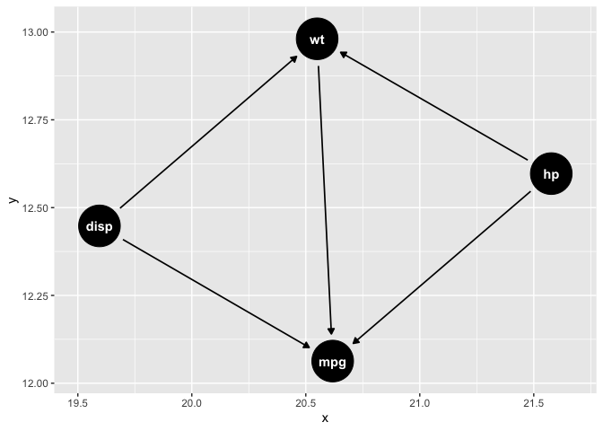

Installation
This package has not yet been released on CRAN, but can be downloaded from Github.
remotes::install_github("asshah4/path")Introduction
The path package is intended to help build causal models with an underlying focus of directed acylcic graphs. However, instead of starting purely from a diagram, this package intends to allow modeling to occur simultaneously, and then leveraging the patterns within the data to help cut away confounders and other terms for a more parsimonious causal model. The premise is that there are two components in studying causality:
- Causal model diagrams
- Hypothesis testing and statistical analysis
These two components are reflected within the primary functions of the package, and are built to help refine and modulate hypotheses as the study develops. The underlying data structure is the concept of a map that has multiple paths describing variable relationships, however they may exist in different layers on the map.
Usage
The package is simple to use. First, lets load the basic packages. The mtcars dataset will serve as the example, and we will use linear regressions as the primary test.
The basic function of the package is the study() argument, which creates a empty data structure object.
create_study()
#> # A study with 0 hypotheses and 0 unique path
#> #
#> # A tibble: 0 × 8
#> # … with 8 variables: name <???>, outcomes <???>, exposures <???>, level <???>,
#> # number <???>, formulae <???>, fit <???>, tidy <???>This is accompanied by hypothesis objects, which are essentially modified formula objects that allow for a better understanding of variable relationships. We create two objects below, which have not yet been analyzed yet.
h1 <-
hypothesize(
mpg ~ X(wt) + hp + disp,
combination = "sequential",
test = linear_reg() %>% set_engine("lm"),
data = mtcars,
)
h2 <- update_hypothesis(h1, combination = "sequential")
# Print h1
h1
#> ----------
#> Hypothesis
#> ----------
#>
#> mpg ~ X(wt) + hp + disp
#>
#> -----------
#> Description
#> -----------
#>
#> Combination sequential
#> Test linear_reg, model_spec
#> Data mtcars
#> Strata none
# Print h2
h2
#> ----------
#> Hypothesis
#> ----------
#>
#> mpg ~ X(wt) + hp + disp
#>
#> -----------
#> Description
#> -----------
#>
#> Combination sequential
#> Test linear_reg, model_spec
#> Data mtcars
#> Strata noneThese hypotheses can then be drawn on to the study map as below.
m1 <-
create_study() %>%
add_hypothesis(h1) %>%
add_hypothesis(h2)
# Print study
m1
#> # A study with 2 hypotheses and 5 unique paths
#> #
#> # A tibble: 6 × 8
#> name outcomes exposures level number formulae fit tidy
#> <chr> <chr> <chr> <lgl> <int> <list> <lgl> <lgl>
#> 1 h1 mpg wt NA 1 <formula> NA NA
#> 2 h1 mpg wt NA 2 <formula> NA NA
#> 3 h1 mpg wt NA 3 <formula> NA NA
#> 4 h2 mpg wt NA 1 <formula> NA NA
#> 5 h2 mpg wt NA 2 <formula> NA NA
#> 6 h2 mpg wt NA 3 <formula> NA NASubsequently, we can fit the models and add the paths that were required. The paths can be utilized to help create the appropriate causal diagrams. The construct_*() functions can be used in any order or selectively.
m2 <-
m1 %>%
construct_map()
# Print analyzed study
m2
#> # A study with 2 hypotheses and 5 unique paths
#> #
#> # A tibble: 6 × 8
#> name outcomes exposures level number formulae fit tidy
#> <chr> <chr> <chr> <lgl> <int> <list> <list> <list>
#> 1 h1 mpg wt NA 1 <formula> <fit[+]> <tibble [2 × 7]>
#> 2 h1 mpg wt NA 2 <formula> <fit[+]> <tibble [3 × 7]>
#> 3 h1 mpg wt NA 3 <formula> <fit[+]> <tibble [4 × 7]>
#> 4 h2 mpg wt NA 1 <formula> <fit[+]> <tibble [2 × 7]>
#> 5 h2 mpg wt NA 2 <formula> <fit[+]> <tibble [3 × 7]>
#> 6 h2 mpg wt NA 3 <formula> <fit[+]> <tibble [4 × 7]>
# Plot analyzed study
library(ggplot2)
m2 %>%
extract_dagitty("h1", tidy = TRUE) %>%
ggdag::ggdag()
Then, for analysis and display of results, the findings can easily be extracted.
m2 %>%
extract_models(which_ones = "h1", tidy = TRUE)
#> # A tibble: 9 × 12
#> name outcomes exposures level number term estimate std.error statistic
#> <chr> <chr> <chr> <lgl> <int> <chr> <dbl> <dbl> <dbl>
#> 1 h1 mpg wt NA 1 (Intercept) 37.3 1.88 19.9
#> 2 h1 mpg wt NA 1 wt -5.34 0.559 -9.56
#> 3 h1 mpg wt NA 2 (Intercept) 37.2 1.60 23.3
#> 4 h1 mpg wt NA 2 wt -3.88 0.633 -6.13
#> 5 h1 mpg wt NA 2 hp -0.0318 0.00903 -3.52
#> 6 h1 mpg wt NA 3 (Intercept) 37.1 2.11 17.6
#> 7 h1 mpg wt NA 3 wt -3.80 1.07 -3.56
#> 8 h1 mpg wt NA 3 hp -0.0312 0.0114 -2.72
#> 9 h1 mpg wt NA 3 disp -0.000937 0.0103 -0.0905
#> # … with 3 more variables: p.value <dbl>, conf.low <dbl>, conf.high <dbl>